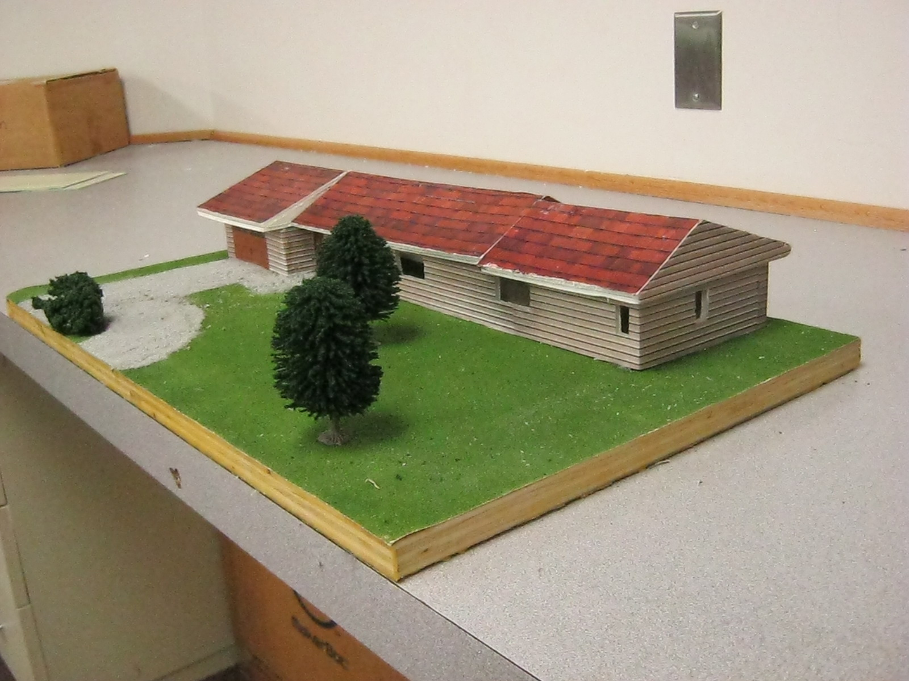

This course provides a study of the fundamental principles of architectural design common to buildings, bridges, homes, and other structural frameworks. Students may design homes or other commercial buildings, construct models, create construction and presentation drawings and develop design presentations including boards, models and 3D computer generated renderings and animations.
This advanced architectural drawing course will focus on communication skills used by professionals in various fields of architecture and design. Projects are developed to stimulate real-world design problems using 3D computer generated modeling. This course is recommended for any student interested in a career in one of the many related fields of Architecture or CAD technology.
This course will help students learn to utilize CAD software as a design tool for engineering, as well as fundamentals of manual orthographic drawings. Several forms of graphic and electronic communication are explored. Students are exposed to graphic design, problem-solving, research and design, and model construction. This class introduces students to 3D computer generated modeling and design.
This drawing course will focus on communication skills used by professionals in various fields of engineering. 3D computer generated modeling and design is the primary technical skill applied in this class. Students are presented with problem-solving situations involving the various types of communication systems. This course is recommended for any student interested in a career in one of the many related fields of Engineering or CAD technology.